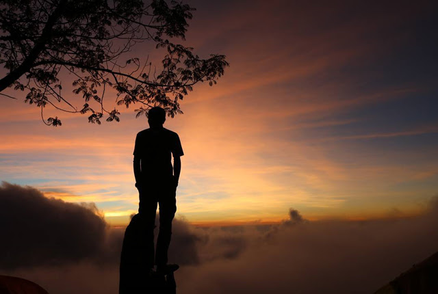

Personal

Halo Saya Zaki Aulia Saya lahir di medan/sumatra utara. Saya Lahir tanggal 3-1-2009.
Saya anak pertama dari dua bersaudra . Saya tumbuh dalam lingkungan yang penuh dukungan orang tua.
Saya suka berbinis sejak kecil, berbinis juga membutuhkan modal dan kreativitas
Pendidikan
Pendidikan Formal
- SD Alwasliyah
- SMP Alwasliyah
- SMKN 9 MEDAN
PENGALAMAN
Bagi saya Pengalaman semasa sekolah
sangat penting untuk menambah wawasan
dan mengasah kemampuan saya.
berikut ada
beberapa pengalaman yang saya dapat saat sekolah

Bergabung dengan jurusan Rekayasa Perangkat Lunak (RPL) di SMK adalah pilihan yang sangat memotivasi saya untuk lebih dalam mengeksplorasi dunia teknologi dan perangkat lunak. Di jurusan ini, saya belajar bagaimana mengembangkan aplikasi, baik untuk desktop maupun berbasis web, serta mendalami berbagai teknologi dan bahasa pemrograman yang sangat relevan di dunia kerja.
Pada awalnya, belajar bahasa pemrograman seperti Java, CSS, dan HTML terasa cukup menantang. Namun, dengan bimbingan dari para guru yang berkompeten di bidangnya, saya mulai menguasai dasar-dasar pemrograman, seperti konsep variabel, fungsi, struktur data, dan algoritma. Seiring waktu, saya semakin terampil dalam membuat kode yang bersih dan efisien, serta menghindari bug yang sering kali muncul selama proses pembuatan aplikasi.
Selain teori di kelas, kami banyak melakukan praktikum langsung yang melibatkan pembuatan aplikasi. Salah satu pengalaman yang paling berkesan adalah saat kami diminta untuk membuat aplikasi sistem informasi menggunakan database MySQL dan framework seperti Laravel untuk aplikasi berbasis web. Kami dibimbing untuk mengikuti langkah-langkah dalam mengumpulkan kebutuhan sistem, merancang database, membuat antarmuka pengguna (UI), dan akhirnya menguji aplikasi yang sudah dibuat.
Proses ini memberikan saya pemahaman yang mendalam tentang siklus pengembangan perangkat lunak, dari tahap analisis, perancangan, pengkodean, hingga pengujian.
contant
Bisa Menghubungi lewat media sosial